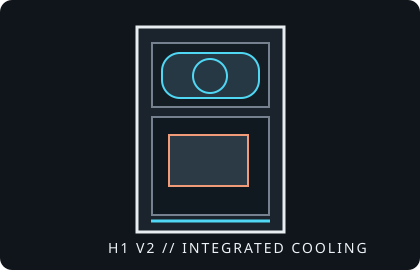

[ IDENTIFIED ENCLOSURE // H1 2022 / V2 ]
NZXT H1 V2
About 405 × 196 × 196 mm, 15.6 L; upright Mini-ITX enclosure supplied with an SFX-L PSU and 140 mm liquid cooler.

VARIANT / ARCHIVAL CAVEAT: H1 2022/V2 is distinct from the earlier H1 generation and its safety recall history. Identify the exact generation, riser and PSU assembly; do not assume parts interchange.
Mechanical specifications and fit
| Catalog identity | NZXT H1 V2 (2022) Mini-ITX compact tower. |
|---|---|
| Dimensions / board | Approximately 405 × 196 × 196 mm; Mini-ITX motherboard only. |
| GPU clearance | Up to approximately 324 mm long, 58 mm thick and 140 mm high; verify actual card outline, power plug and bracket against the manual. |
| CPU cooling | Integrated 140 mm AIO liquid cooler and radiator; this is the intended CPU cooling assembly, not a general tall-air-cooler chassis. |
| PSU / drive bays | Includes 750 W SFX-L power supply in the V2 retail bundle. Two 2.5-inch drive mounts. Exact cable routing and PSU/RGB/fan-control harness are generation-specific. |
| Revision / identification | H1 V2 is the 2022 redesign; confirm the riser/case revision and verify the supplied PCIe cable and safety documentation before use. |
Compatibility notes
The integrated AIO and PSU make this a coordinated system: replacing either may require short, correctly routed cables and can change available GPU space. A nominal 58 mm GPU thickness does not guarantee clearance for every high-positioned connector. Review the V2 manual, not the older H1 manual, and check any recall or replacement-riser status applicable to the actual unit.
- Measure GPU length, height and thickness, including backplate and power connector clearance.
- Keep the factory AIO tubing path clear when servicing the motherboard or GPU.
- Document included PSU leads and pump/fan headers before disassembly.
Manufacturer specifications and support
- NZXT H1 product informationOfficial manufacturer product family information.
- NZXT H1 Series V2 FAQOfficial support article for the V2 generation and product-specific help.
- NZXT H1 (2022) downloadsOfficial manual and download listing for the 2022/V2 chassis.